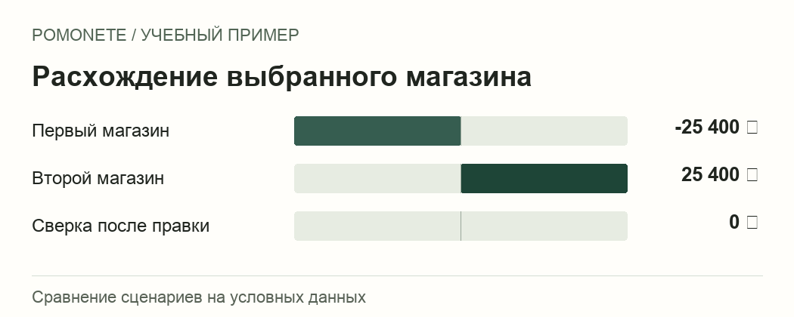

Итог совпал, а магазины перепутаны. Как селлеру проверить распределение
Аналитика Яндекс Маркета для контроля суммы и привязки денег к конкретному магазину.
В общей аналитике Яндекс Маркета месячная выручка совпала с источником. Селлер сверяет детализацию и видит, что два магазина показывают разные результаты. Задача в том, чтобы проверить распределение, которое общая сумма не способна подтвердить.
Какие ключи должны сохраняться
Для каждой операции запишите магазин, договор или кампанию и товарную строку. Если таблица собирается по всему кабинету, проверьте, какую роль играет каждый идентификатор. Совпадающее имя магазина не является ключом и иногда меняется.
Чтобы пересобрать расчёт «Расхождение выбранного магазина» для своего магазина, перенесите в него исходные числа. В формуле A обозначает «выручка после распределения, ₽», B обозначает «выручка в проверочном отчёте, ₽». Знак показывает направление разницы. Обе величины приводят к одному периоду и одной единице измерения до вычитания. Запишите рядом период и охват каждого среза. Для оценочных строк оставьте пояснения рядом с исходными значениями. При чтении сводки будет видно, какие из них пока подтверждены.
Расхождение выбранного магазина = A − B
| Условие | Выручка после распределения, ₽ | Выручка в проверочном отчёте, ₽ | Расхождение выбранного магазина |
|---|---|---|---|
| Первый магазин | 219 900 | 245 300 | -25 400 ₽ |
| Второй магазин | 187 700 | 162 300 | 25 400 ₽ |
| Сверка после правки | 245 300 | 245 300 | 0 ₽ |

В сценарии «Первый магазин» в формулу подставляем выручка после распределения, ₽ = 219 900, выручка в проверочном отчёте, ₽ = 245 300. Получается -25 400 ₽. Часть операций могла отойти второму магазину, хотя общий оборот тот же.
В сценарии «Второй магазин» в формулу подставляем выручка после распределения, ₽ = 187 700, выручка в проверочном отчёте, ₽ = 162 300. Получается 25 400 ₽. Расхождение обратного знака совпадает по сумме с первым.
В сценарии «Сверка после правки» в формулу подставляем выручка после распределения, ₽ = 245 300, выручка в проверочном отчёте, ₽ = 245 300. Получается 0 ₽. Настройки фильтров и идентификаторы магазинов подтверждены первичным отчётом.
Если «Первый магазин» взять за исходную точку, «Второй магазин» меняет показатель «расхождение выбранного магазина» на 50 800 ₽, а «Сверка после правки» на 25 400 ₽. Между двумя последними строками разница составляет -25 400 ₽ при вычитании второй из третьей. Смотрите, какой именно вход изменился между строками. Если менялись объём и условия одновременно, итог сравнения относится ко всему сочетанию.
В пересчёте на исходное значение разница второй строки составляет 200%. Здесь в знаменателе модуль первого результата, 25 400 ₽. Для показателя в процентах рядом сохраните и абсолютную разницу в процентных пунктах. Для малого исходного значения процентный скачок может оказаться крупным даже при скромном практическом эффекте. В рабочем отчёте оставьте оба исходных значения, чтобы при расширении выборки можно было пересчитать изменение.
Как проверить прошлый период
Сохраните снимок исходного магазина и текущую схему связей. После изменения названия или модели работы сопоставьте несколько проданных заказов. Для неизвестных операций полезно оставлять отдельный нейтральный раздел до подтверждения.
Соберите небольшую исходную выборку для «Второй магазин», прежде чем переносить правило на весь магазин. Нужны исходная выгрузка, журнал загрузок и контрольные суммы. Среди записей найдите одну обычную и одну с изменённым значением «выручка после распределения, ₽». Убедитесь, что после пересчёта на сопоставимое окно обе строки дают те же результаты, которые видит исполнитель. Для ручных поправок оставьте короткое основание.
Перед обновлением отчёта сохраните источник, параметры запроса, время выгрузки и число строк на каждом шаге. Сначала проверяют ключ и единицу наблюдения, потом сравнивают итоговые суммы. Одинаковые суммы могут относиться к самостоятельным операциям. Чтобы найти дубль, проверьте ключ и документы. Подключив справочник, проверьте, какие записи не сопоставились, и разнесите их по причинам до пересчёта показателя.
Что сильнее всего меняет результат
Для «расхождение выбранного магазина» начнём с результата 25 400 ₽. В «Второй магазин» условно меняем «выручка после распределения, ₽», «выручка в проверочном отчёте, ₽» по очереди. Шаг округляем до целой исходной единицы около 10%. Сравнение относится к одной строке расчёта. При сильной сезонной смене его полезно повторить и на второй базе с другим доступным объёмом.
- «Выручка после распределения, ₽» меняется с 187 700 на 206 470. При прежних остальных входах получается 44 170 ₽, сдвиг составляет 18 770 ₽.
- «Выручка в проверочном отчёте, ₽» меняется с 162 300 на 178 530. При прежних остальных входах получается 9 170 ₽, сдвиг составляет -16 230 ₽.
Данные по «выручка после распределения, ₽» дали самый заметный эффект величиной 18 770 ₽. Подготовьте второй тест с двумя входами, которые обычно меняются вместе. Сравните его с одиночной подстановкой. Различие покажет, хватит ли следить за одной строкой при выбранном действии или в отчёте понадобится связанная пара наблюдений.
При корректировке по новой версии не оставляйте только сумму изменения. Сохраните движение между исходными группами и объяснение причины. Это поможет не переносить вывод о высокой доходности одного магазина на другой, даже если общий результат совпал.
Как принять итог отчёта
Сверьте общую сумму, каждый магазин и несколько контрольных заказов. Запишите, какая группа перестала совпадать и какой ключ был исправлен. Если смена затронула прошлые недели, повторите проверку старых снимков по запросу, с которым сформирован отчёт.
При повторном импорте берите ту же исходную выборку и фиксируйте, какие записи действительно изменились. В стабильном отчёте сумма после второго прогона того же набора остаётся равной первой. Отложенные корректировки могут изменить поздний снимок, поэтому журнал версий пригодится для ответа на вопрос, когда возникло отличие. Дайте пользователю отчёта ссылку на строку, которую можно проверить вручную.
В карточку наблюдения внесите исходный ориентир, факт после вмешательства и размер выборки. Для «расхождение выбранного магазина» оставьте единицу из таблицы и дату подстановки. В аналитике продавца Яндекс Маркета показатель должен отвечать на тот же вопрос при повторном сборе. Если на следующем цикле изменятся исходники, сохраняйте расхождение вплоть до строки, которую сможет пересчитать коллега.